Sometimes a technical discipline manages to reach the point of providing
the wrong answers to the right problems, as in the case of what is
commonly misnamed Software Engineering. It may also happen that
a whole industry is built on the belief that no answers to the wrong
problems is a profitable strategy to respond to the demanding needs of
an ever-growing customer base. Historically, such a case is exemplified
by the infosec industry. It's a sterile exercise to acknowledge that the industry has
reached the point where flame wars about irresponsible disclosure,
embargos and branded vulnerabilities are the major pillars of its dialectic.
Thirty years after the Morris Worm, we are still dealing with
WannaCry, after all.
My little personal contribution to the gallery of infosec failures is
the discovery of a vulnerability in F5 BIG-IP.
The vulnerability has been assigned CVE-2018-5548.
BIG-IP products can be deployed to function as an Access Policy Manager,
which provides, among other things, authentication facilities to web
applications. Under such configuration, the appliance conceals redirect
location URLs by encrypting them in a query string parameter, probably
in the attempt to prevent tampering and forging. This puts the appliance
in the situation of behaving as a cryptographic oracle vulnerable to
chosen-plaintext attacks (and to a certain extent, chosen-ciphertext),
since it allows the attacker to obtain the ciphertexts of arbitrary
plaintexts she controls, the plaintexts being the concealed Location
header values of HTTP Redirect responses.
The encryption mode of operation chosen by the
vendor is ECB, on the security of which many
things have been said . Whenever the next talk about Quantum Cryptography
hits the news, let's remember that ECB mode of operation is still dropping
bodies.
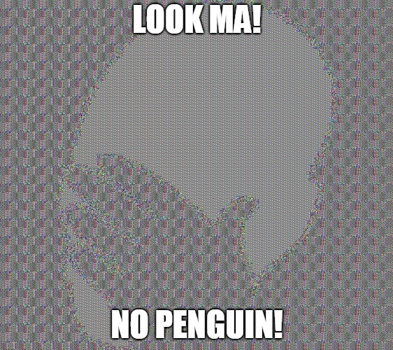
By specifying an arbitrary relative URL on a page requiring authentication
by the BIG-IP, we receive the following JavaScript code among the
responses:
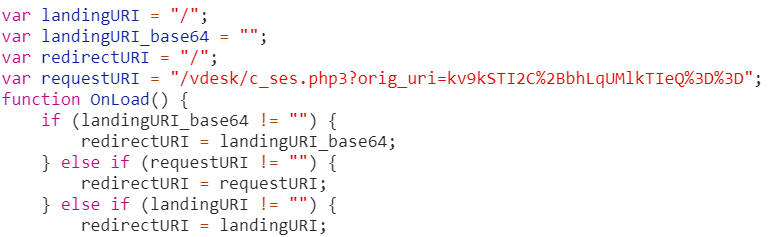
The code defines the variable ‘requestURI’ to be a further relative
URL whose query string contains an ‘orig_uri’ parameter of value
apparently encrypted. This variable is used in the decisional process
which in the end leads the browser to navigate to the URL:
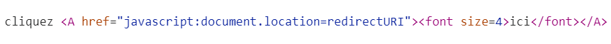
Attempting to request the URL directly results in a redirection to the
relative path we specified in the former request:
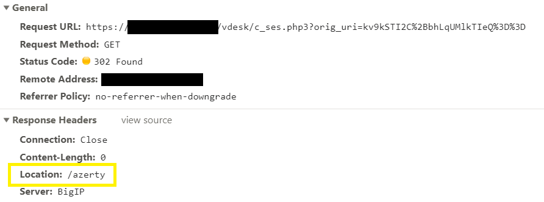
It means that there is something in the value of “redirectURI” which
refers to the relative path “/azerty”. It is important to understand
that this parameter is under the control of the attacker. The parameter
is Base64-encoded, and decoding it results in what appears to be random
data:
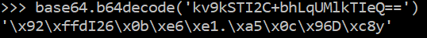
The first hint towards the encryption hypothesis comes from the length
of the decoded ciphertext, which is always aligned to multiples of the
block size, namely 16 bytes, as it can be seen by increasing the length
of the plaintext path:
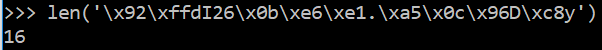
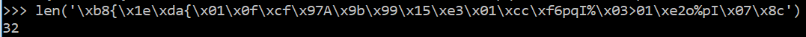
This suggests padding, in order to ensure that the encrypting chunks of
data are always of the same size of the block, assuming that the algorithm
is a block-cipher. Our first assumption is then that the URL sent to
the authentication provider is encrypted by a block cipher like AES.
Interestingly enough, requesting the same URL produces
always the same encrypted string, which suggests two things:
the mode of operation is either ECB or CBC with initial
values that never change. If we specify a plaintext like
“aaaaaaaaaaaaaaaaaaaaaaaaaaaaaaaaaaaaaaaaaaaaaaaaaaaaaaaaaaaaaaa”
we obtain five blocks of which three are identical. Only the extremities
are different:
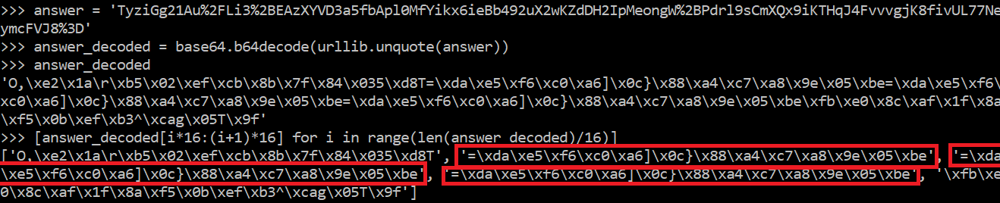
This implies that the first and the last block differ somehow, the former
mismatch is probably due to additional characters added by the appliance
itself and the latter to padding. As it turns out, the appliance is
adding at least a total of 6 bytes at the beginning (first block) and
at the end (last block) of the URL. This piece of information is not
controlled by the attacker.
Since a 16 bytes long plaintext is encrypted to a 32 bytes long
ciphertext, it is enough to decrease incrementally the length of the
chosen plaintext, one byte at a time starting from 16 bytes, until the
corresponding ciphertext length is exactly one block long. Indeed, such
a ciphertext is obtained when the plaintext is 10 bytes long or less,
implying that 6 bytes are added to the plaintext by the appliance. This is
confirmed by the fact that a 26 bytes long plaintext still encrypts to two
blocks and a 27 bytes long one to three blocks. Since no more than the
controlled input (the relative path) is present in the Location header,
the additional bytes must be stripped by the appliance upon decryption,
otherwise they would be observable.
A very likely possibility is that the mode of operation used is ECB since
all the other modes, when encrypting plaintext blocks, are combining
previous intermediate blocks according to a scheme (a xor operation
for AES). ECB encrypts each block independently with the same key,
which would explain why two identical plaintext blocks are encrypted
to two identical cipher blocks. Under the assumption that ECB is used,
we attempt to decrypt the first and last blocks of our plaintext payload
to see what is added by the server, but in the payload the first and last
blocks are not directly controllable, although the blocks in between are.
The idea is then to send our payload (minimum of 3 blocks) and to retrieve
the corresponding ciphertext; then we alter this ciphertext by replacing
the second by a copy of the first block. This way, if ECB is in place,
the appliance will decrypt the second block, revealing to us the value of
the first block, which containts the bytes it adds at the beginning:
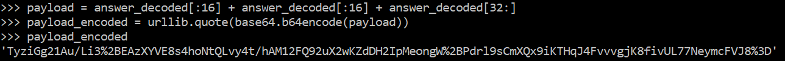
The resulting encrypted string is then used as the parameter in the
query string:
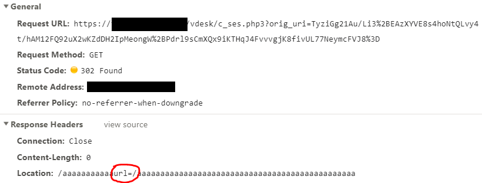
The decryption succeeds, the oracle reveals what the BIG-IP adds in
the first block. By applying the same technique to the last block,
we conclude that it contains just PKCS7 padding. This latter result
fully explains the observation of the additional 6 bytes: given that a
10 bytes long plaintext encrypts to a 16 bytes ciphertext, and that the
string length of "url=/" is 5 bytes, the only possibility for the last
byte is to be a padding byte according to the PKCS7 scheme.
This all means that we can control the full query string parameter of
the request: the appliance not only encrypts chosen plaintexts but also
decrypts chosen ciphertexts. Furthermore, we have confirmation that
the mode of operation of the encryption algorithm is ECB.
The immediate consequence is that the anti-tampering mechanism
devised by the vendor is completely defeated. We can in fact ask
the oracle to encrypt a string like "aaaaaaaaaaaurl=http://evil.com",
and reply the corresponding ciphertext back, from which we remove the
first block, making it possible to forge apparently innocent URLs like:
https://good.com/vdesk/c_ses.php3?orig_uri=96HDUEK5uKsfv3GYHM/qqBkq99TVlKNforF6/rcrogE%3D
which instead redirects to an unguessable external domain:
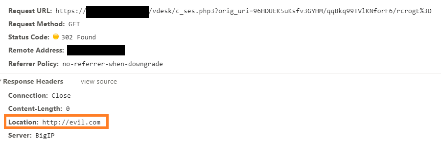
This unlocked feature, combined with the fact that the destination URL
is encrypted and obfuscated, transforms the BIG-IP into the ultimate
Phishing factory.
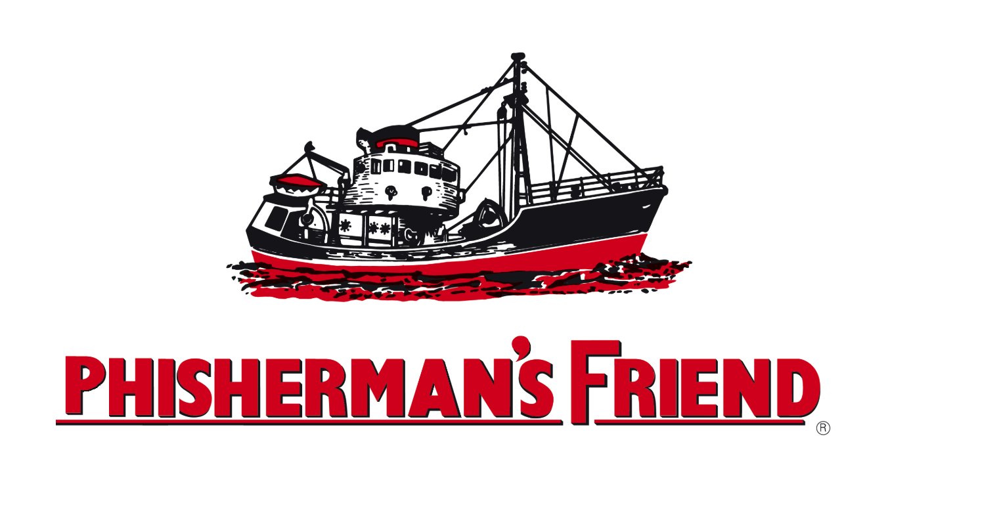
When modernist currents' only goal seems to be
the discouragement of artefacts that may be even remotely contaminated by
the emotional luggage of popular culture, condemning art to serialized
pranks, the true artist is comforted at the idea that he could still seek
shelter in the contemplation of the perdurable ECB Penguin classic.